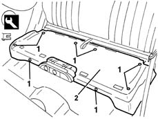
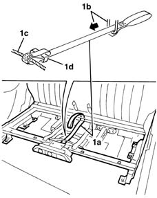

7050A67 Rear seat sliding control DEVICE from luggage compartment - R.R.
- Path
- Procedures > 70 FITTINGS > 7050 REAR SEATS > 7050A rear seat assembly > 7050A67 Rear seat sliding control DEVICE from luggage compartment - R.R.
- Kind
- repair procedure (removal / refitting; the operation number is the code)
- Applies to
- all engines; all production periods
- Interactive page
- https://sloeber94.github.io/elrnDB-lYpsln/en/#/2429653
Applies to: all engines; all production periods
 Removing
Removing
 Refitting
Refitting7050A20 one-piece rear seat cushion - r r
7050A22 rear seat cushion - r+r (alternatively)
1. Release the retaining buttons (1a) using the special tool.
 | Name | Country |
|---|---|---|
3 | Scraper blade | 1.878.077.000 |
2. Remove the mat under the cushion.

Applies to: all engines; all production periods
1. Remove the rod (1a) releasing it from the housing (1b) then from the seat (1c) extracting the buckle (1d).

Applies to: all engines; all production periods
Refitting
RemovingCheck that the device is not damaged.
Fit the rod in the buckle and attach it to the seats.
Position the mat and secure it using the retaining buttons.
7050A20 one-piece rear seat cushion - r r
7050A22 rear seat cushion - r+r (alternatively)